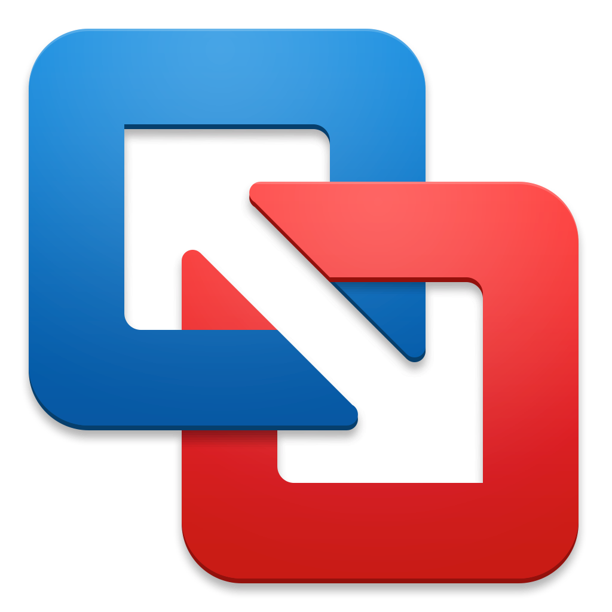
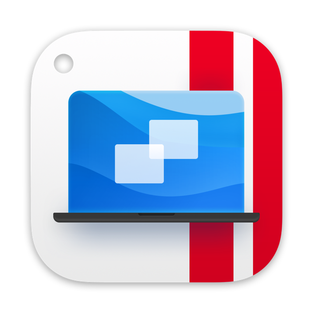

VMWare Fusion
VMWare Fusion is a free and powerful virtualization software that allows you to run Windows and other operating systems on your Mac.
Download VMWare FusionParallels Desktop
Parallels Desktop is the best virtualization software that allows you to run Windows alongside your Mac seamlessly. But it costs 100$ per year.
Download Parallels DesktopVirtualBox

VirtualBox is a free and open-source virtualization software that is simple and easy to use. A great alternative of VMWare Fusion.
Download VirtualBoxQEMU

QEMU is a free and open-source emulator that can run Windows and other operating systems on your Mac. It is more complex than the others, since it is command line-based, but it is very powerful.
Download QEMUUTM

UTM is a free and open-source virtualization and emulation software that is based on QEMU. It is easy to use and has a nice GUI.
Download UTM